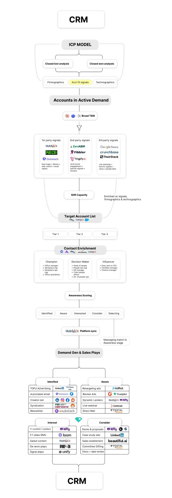

The GTM System That Rebuilt a $50M SaaS From Scratch
ICP model → active demand filtering → target account list → contact enrichment → outbound & demand gen plays. Every stage documented. The exact workflow, for free.
ps — if you want this system built for your org, schedule a call with me here.
The Full System
CRM → ICP → Outbound → Plays → CRM
Every stage below maps to this workflow. It starts and ends in your CRM. Everything in between is the infrastructure that makes your pipeline predictable.

Stage A
The ICP Model
Most companies confuse "best customers" with "most recent customers." The ICP model reverse-engineers your closed-won/lost data to find which account clusters punch above their expected win rate, then weights them by LTV.
- Close rate by firmographic segment: by industry + headcount band.
- Average deal size by segment: broken out by ICP cluster.
- Net revenue retention by cohort: NRR at 12mo, 24mo per segment.
- Average sales cycle by segment: days from first touch to closed-won, per segment.
- Buyer committee roles in closed-won vs. closed-lost: who was in the room when you won? Who was missing when you lost?
- Churn indicators by firmographic cluster: which company profiles churn at 12mo? Which expand?
The LTV-Weighted ICP Formula
(Close Rate × Avg Deal Size × Expansion % × Retention %) ÷ Avg Sales Cycle Days
A segment with a 40% close rate but 18-month avg churn is worse than a segment with a 25% close rate and 36-month expansion LTV. The formula tells you which segment is actually worth pursuing.
The Three Analyses
↳Closed-won analysis. Score every closed-won deal across 7+ firmographic and intent signals. Weight each signal by its actual correlation to a win (not by assumption). Run a propensity-to-buy model against your closed history to validate it.
↳Buyer committee mapping. Pull contact data for every closed-won deal. Map economic buyer, champion, tech evaluator, end user, legal/procurement. Compare against closed-lost: what roles were missing when you lost? That's your minimum committee completeness gate.
↳Negative ICP flags. Which firmographic clusters churn fastest? Which buyer titles stall deals? This is your exclusion model - the DQ triggers that prevent SDRs from wasting time on accounts that will never close.
ICP Model Checklist
- Close rate broken out by industry + headcount band (not blended)
- Average deal size segmented by ICP cluster
- NRR at 12mo and 24mo per cohort — not company-wide
- Average sales cycle in days per segment
- Buyer committee roles mapped: closed-won vs. closed-lost
- Churn indicators identified by firmographic cluster
- Signal weights assigned (or derived from predictive model if 150+ deals)
- LTV-weighted score calculated per segment
- Top 3 LTV segments identified → these define your Tier 1 ICP
- Negative ICP exclusion flags documented: firmographic DQs + buyer role DQs
- Win pattern defined: e.g. "Champion at Director+ with active demand signals + no Ops Manager as sole contact = closed won"
- Propensity-to-buy model validated against historical closed-won data
Example Signal Scoring
| Signal | Score 3 | Score 2 | Score 1 | Score 0 | Weight |
|---|---|---|---|---|---|
| Industry Fit | Mid-Market SaaS, FinTech | HealthTech, EdTech, HRTech, Logistics | Manufacturing, Retail, eComm | Real Estate, Non-Profit | 20% |
| Employee Band | 50–500 | 500–2,000 | 2,000+ | <50 | 20% |
| Revenue Band | $5M–$100M | $100M+ | — | <$5M | 15% |
| Tech Stack Match | Manual 0–3 score per account (BuiltWith / HG Insights) | No match | 10% | ||
| Headcount Growth | Manual 0–3 score per account (LinkedIn native via Clay) | Declining | 10% | ||
| Geo Fit | Target geo = 3, adjacent = 2, out of market = 1 | No fit | 5% | ||
| Demand Signals | Manual 0–3 score per account (Bombora / G2 / RB2B) | None | 20% | ||
Stage B
Accounts in Active Demand
Your ICP model tells you which accounts are worth pursuing. Active demand filtering tells you which ones are worth pursuing right now. This is the difference between TAM and pipeline.
You start with your broad TAM - everyone who could theoretically buy. Then you filter through three signal layers until you're left with accounts actively showing purchase intent.
The Three Signal Layers
↳1st party signals (highest intent). Lead magnet downloads, newsletter signups, de-anonymized website visitors, email replies. Someone already touched your brand. Tools: HubSpot, RB2B, Outreach.
↳2nd party signals (medium intent). Ad and social engagement, partner signals, G2 reviews. Someone in your orbit is actively engaging with content in your category. Tools: ZenABM, Fibbler, Trigify.io.
↳3rd party signals (context signals). Standard signals are job openings, tech stack changes, funding news. With certain tools, we now have the ability to scrape for any signal that is available on the open web. Tools: TheirStack, Crunchbase, Google News.
How Far to Filter: Match Your SDR Capacity
SDR headcount × accounts per SDR per quarter = Target Account List size
Example: 3 SDRs × 100 high-touch accounts = 300-account TAL.
Filter your active demand universe to this number.
Active Demand Toolstack
Stage C
Target Account List + Tier Routing
Your active demand list, filtered to SDR capacity. Now every account gets tiered so your team knows exactly how to treat it — white glove, nurture, or monitor. This isn't a judgment call. It's a reproducible system anyone on your team can run.
| Tier | Score | Criteria | Motion |
|---|---|---|---|
| T1 — White Glove | ≥ 0.75 | All signals scored. Full ICP match. Active demand confirmed. | SDR direct outbound, personalized sequences, 1:1 assets |
| T2 — ABM Nurture | ≥ 0.50 | Firmographic fit. Limited active demand signals yet. | ABM ads, LinkedIn targeting, nurture sequences, SDR sequencing |
| T3 — Monitor | ≥ 0.25 | Partial fit. Worth watching for signal changes. | Broad awareness ads only. No SDR time until signals upgrade. |
| DQ | < 0.25 | Triggers negative ICP flags. Firmographic exclusion cluster. | Remove from TAL. Do not route to SDR. |
Stage D
Contact Enrichment + Awareness Scoring
Every account in your TAL needs a full buyer committee mapped. And every account needs an awareness stage score - so the right message finds them at the right moment in the journey.
Buyer Committee Roles
↳Champion. Office manager, Workplace manager, Workplace ops manager, Office operations. Day-to-day user who feels the pain your product solves and drives internal adoption.
↳Decision Maker. Head of People, People Ops Manager, HR Manager, Chief People Officer, Dir. of People Ops. Budget authority and ultimate signoff on the purchase.
↳Influencer. Exec Asst to CEO, Facilities Manager, Finance Manager. Not in the buying seat but can accelerate or kill a deal depending on their stance.
Awareness Scoring
Every account gets scored into one of five awareness stages. Scores update dynamically as new signals fire. Claude Skills generate stage-matched messaging - or buyer committee persona-matched, or both.
Firmographic match only. No engagement yet.
Ad impressions & content views. Passively in orbit.
Repeated engagement wtih 1/3 of the buyer committee.
High-frequency, multi-channel, 50%+ buyer committee engaged.
Active evaluation. SDR handoff triggered.
↳Recency bonus: Signal within 7 days = 2× weight. 7–30 days = 1×. 30–90 days = 0.5×.
↳Advance rules:
Identified → Aware: 1 verified 2nd/3rd party signal.
Aware → Interested: 2+ signals across 2+ channels.
Interested → Consider: 3+ 1st party OR 5+ cross-channel.
Consider → Selecting: pricing/demo signal + 3+ warm 1st party touches.↳CRM fields per account: Buyer Committee tag, Committee Coverage Score, Awareness Stage, dated engagement log, contact intent data ("Interest in [category] 6× in last 30 days"), ICP Tier, LTV Score + Priority Rank.
Enrichment Toolstack
Stage E
Demand Gen & Sales Plays
This is where the system pays off. You now have accounts tiered by ICP score and segmented by awareness stage. The play library matches to both dimensions and gets more personalized as you move down-funnel and up-tier.
Build the Signal
- TOFU advertising (LinkedIn, Meta)
- Automated email sequences (Outreach)
- Creator-led content syndication
- Industry newsletter placements (Substack)
- FSD / Catersource syndication
Deepen Engagement
- Retargeting ads (AdRoll)
- Review generation ads (Trustpilot)
- Dynamic landing pages (HubSpot / Mutiny)
- Live webinar (Goldcast)
- Direct mail (Postal.io)
Go 1:1
- Personalized content + landers (Mutiny)
- 1:1 video DMs (Loom)
- Gated content / lead magnets (HubSpot)
- De-anon plays → direct SDR outreach (RB2B)
- Signal-triggered sequences (Unify)
Close the Gap
- Decks & proposals (Mutiny, Google)
- Case study ads (LinkedIn)
- Sales enablement assets (Beautiful.ai)
- Committee gifting (Postal.io)
- Disco + deal review (AE-led)
Awareness stage on the account record updates dynamically — routing happens automatically
The Closed Loop
Everything Flows Back to CRM
Every signal, every play, every contact enrichment update, every awareness stage change — it all writes back to the account record. The system compounds because the data compounds.
You Have Two Choices Right Now
Choice 1: Build It Yourself
Take this guide. Download the spreadsheet. Set up the tools. Wire the automations. 14-16 weeks if you're focused. Longer if this isn't the only thing you're working on.
Choice 2: We Build It For You
At Exit Engine, we build AI-powered GTM systems for B2B SaaS. We implement the full ICP-to-plays system - custom to your data, your stack, your sales motion. 30 days to operational.
If you're Choice 1 — respect. This guide will set you on the right path. Go build.
If you're Choice 2 — let's talk. 30 minute call and we'll show you exactly how we'd build the system.
Ready to Build the System?
We help B2B startups build AI-powered GTM systems that turn signals into pipeline — without adding headcount.
Book a Strategy Call →